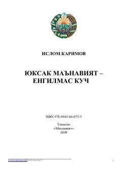

YMMa'naviyatning jamiyat hayotidagi o'rni va uning ahamiyati haqidagi fundamental asar.
Ushbu asarda jamiyat hayotida ma'naviyatning tutgan o'rni, uning nazariy va amaliy asoslari chuqur tahlil qilinadi. Shuningdek, milliy qadriyatlarni tiklash, yoshlarni yot g'oyalardan himoya qilish va mustaqillik yillarida amalga oshirilgan ulkan ishlar haqida so'z boradi.